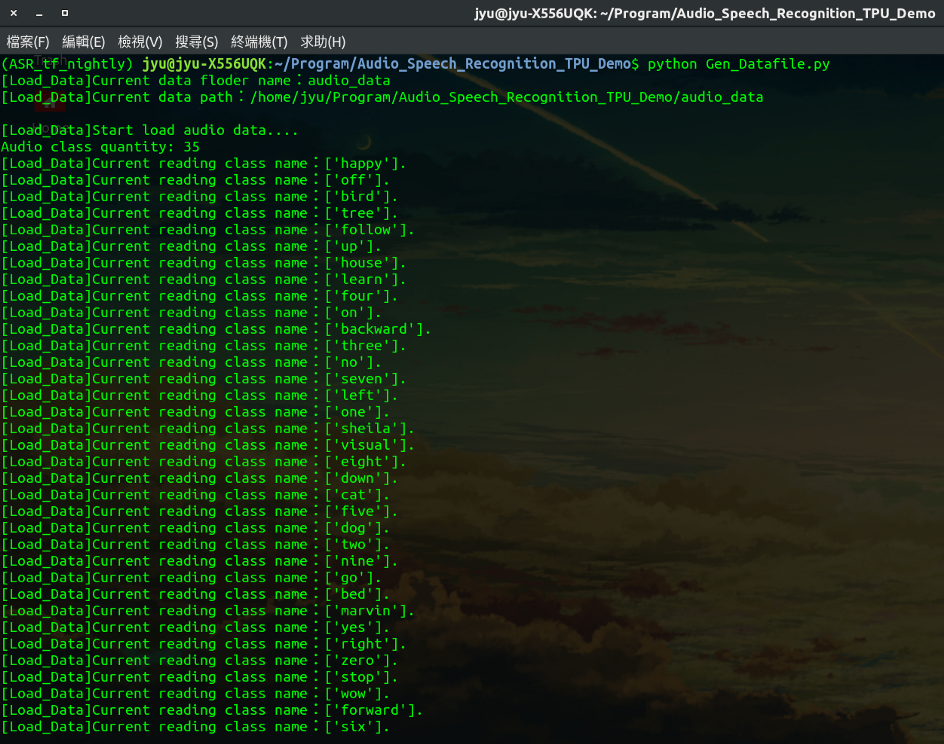
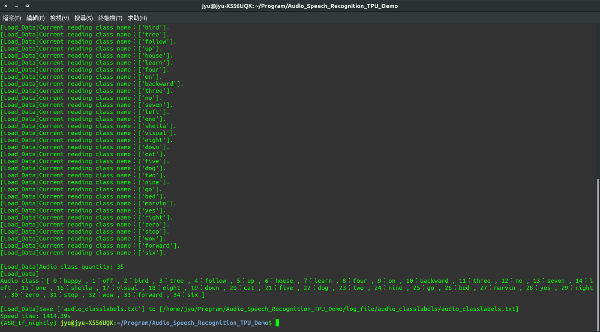
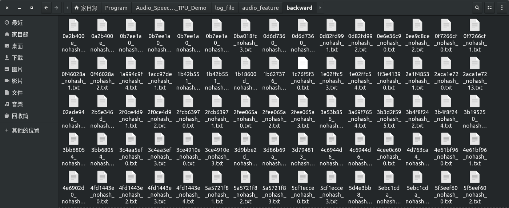
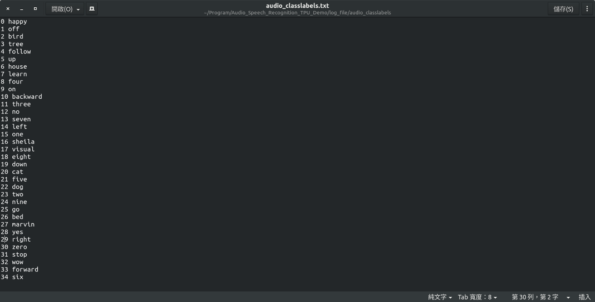

GitHub：https://github.com/s123600g/asr_edgetpu_demo
關於環境配置部分請參考 (一)前言與開發環境配置
在此階段我們要將語音檔案擷取出語音特徵，並且產生下一階段(三)建置模型並訓練所使用資料來源。
關於一些必要參數配置，可在Config.py 裡面找到，如需改請找到對應參數進行修改。
使用Tensorflow官方Simple Audio Recognition例子內所使用之語音資料。
語音資料來源：https://storage.cloud.google.com/download.tensorflow.org/data/speech_commands_v0.02.tar.gz
語音資料內容為收集眾多不同人對於單字詞，進行口說錄音語音檔案(wav)，每一個音檔時間為一秒，共有35個分類(每一類為一個資料夾)。
Config.py內一些參數如下：
data_quantity_max–> 此參數主要管控要對一個類別產生多少個語音特徵文字檔。
sample_rate –> 語音之頻率參數。max_pad_len，語音特徵向量內每一個位置長度。channel –> single channel。Audio_Data_Directory_Root –> 音頻檔案目錄所在位置。Audio_Data_DirectoryName –> 音頻檔案目錄名稱Log_DirectoryName –> 擷取出來相關檔案放置位置。log_file_type –> 檔案類型，預設使用txt。Log_FeatureData_DirectoryName –> 放置所有特徵檔案目錄名稱。Log_ClassLabelsData_DirectoryName –> 放置分類對應表檔案目錄名稱。內部針對語音特徵擷取之處理，實際是在Load_Data.py進行，使用Python Package — librosa 進行 MFCC 特徵擷取
有關 librosa 資訊可參考：
關於 MFCC 特徵值如何取得，使用 librosa 內 librosa.core.load()方法進行讀取語音檔案，給予必要2個參數分別是path(語音檔案來源)與sr(採樣頻率)。
path會在程式中自動抓取判斷，sr是對應在Config.py內sample_rate參數配置，預設為16000。
wave, sr = librosa.load(file_path, mono=True, sr=sample_rate)
將讀取語音內容進行長度裁切處理，從0索引位置開始，每隔3個位置取出一次內容，也就是內容總長度/3。
wave = wave[::3]
使用 librosa 內 librosa.feature.mfcc ()方法進行MFCC特徵值擷取，給予必要2個參數分別是wave(語音檔案內容)與sr(採樣頻率)。
mfcc = librosa.feature.mfcc(wave, sr=sample_rate)
主要執行程式： Gen_Datafile.py
如果要更動來源位置或目錄名稱，請更改在Config.py內以下參數值
Audio_Data_Directory_RootAudio_Data_DirectoryName執行前需注意一點，確認是否已切入至python虛擬環境，如已切入至該虛擬環境內，在執行python3程式時，可以直接以python指令進行，因為在建立虛擬環境時，是以python3版本進行環境建置，python指令會直接指向python3。
在終端機打以下指令，執行Gen_Datafile.py
python Gen_Datafile.py
 
執行結果會根據在Config.py以下參數設置
Log_DirectoryNameLog_FeatureData_DirectoryNameLog_ClassLabelsData_DirectoryName預設在專案目錄內log_file/，放置處理後兩個結果，分別放置目錄名稱如下：
log_file/audio_feature 資料目錄
放置 35 個類別各自 450 個語音特徵文字檔，每一筆語音特徵結構為(20,11)，也就是每一個語音會產生 20 列特徵值，並且每一筆特徵長度會是 11 欄。

log_file/audio_classlabels 資料目錄
audio_classlabels.txt放置每一個分類之編號文字檔，編號從0開始，也就是35個類別範圍在0~34，此編號用在預測識別結果查詢上。

到目前階段為止，針對語音特徵資料之處理，我們已產生各類別自己450個語音特徵文字檔與放置各類別所屬編號audio_classlabels.txt檔案。